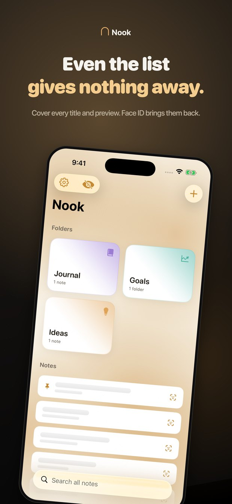
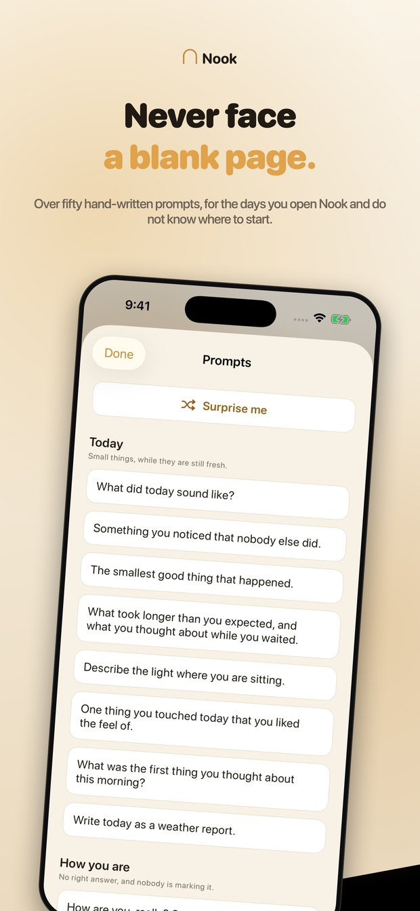
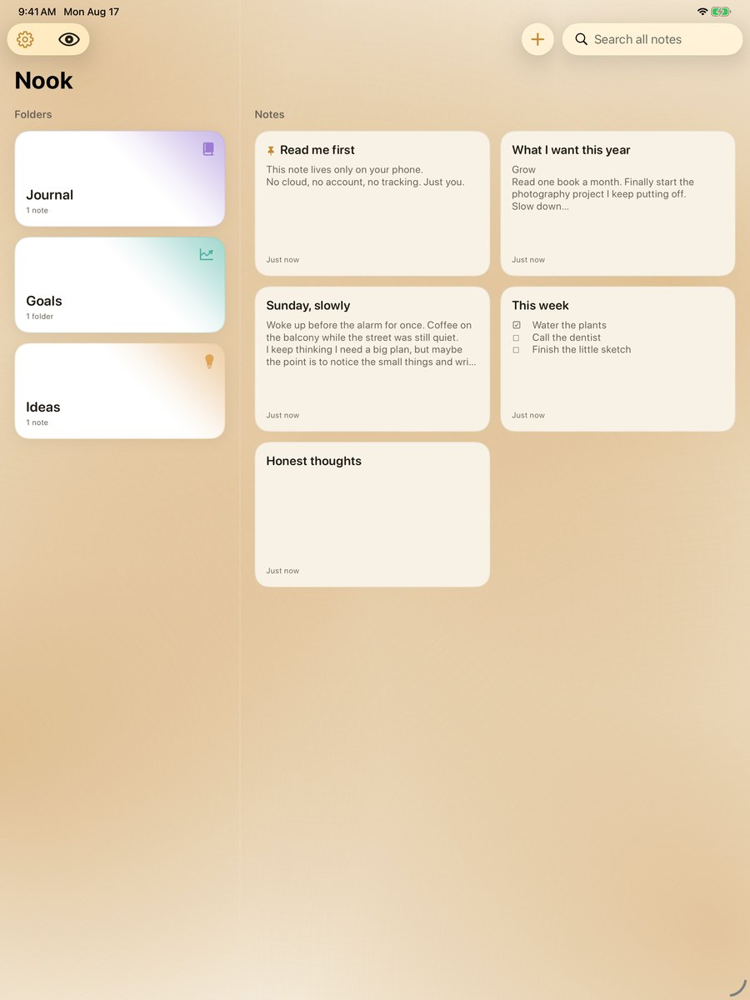

Nobody reads over your shoulder
Turn it on and each word blacks out the moment you finish it. The word under your cursor stays faintly visible, just for you, so you can still see what you are doing. Tap the eye and the page comes back.
- The person beside you sees black bars
- You still see the word you are writing
- Remembered per note, never a global switch
Even the list gives nothing away
Protecting the page while you write it does little if your list still reads like a table of contents. Cover every title and preview behind glass, and bring them back with Face ID, all at once or one note at a time.
- A covered note never renders its text at all
- Uncover a single note, leave the rest covered
- Everything covers itself again when you leave the app

There is no server to send it to
Nook has no networking code beyond the purchase. Not disabled, not opt in: absent. No account, no sync, no analytics, no crash reporting. The App Store privacy label reads Data Not Collected because there is genuinely nothing to collect.
- Everything is stored on your device
- Encrypted backups only you can open
- Spotlight is off until you turn it on
Everything you would want from a notebook
And nothing you would not.
Face ID or a passcode
Lock the app, and put a separate passcode on any folder.
Write properly
Titles, headings, bold, italic, lists, checkboxes and dividers.
Prompts for empty days
Fifty one hand written prompts, grouped by what you might need.
Made for iPad
Folders down one side, your pages beside them.
Works on a plane
No connection needed, because there is nothing to connect to.
One payment
No subscription, no account, no upsell later.
For the days you do not know where to start
Fifty one prompts, written by hand and grouped by what you might need: today, how you are, the people in your head, looking back, looking ahead, the quiet ones, the unsaid ones. On devices with Apple Intelligence, Nook can also suggest a topic or reflect on an entry, using on device models that make no network call.

A whole desk on iPad
Folders down one side, your pages beside them, so a week of writing is visible at a glance. The same app, the same promise.

Buy us a coffee, once
Try everything free for seven days. If Nook earns a place on your phone, one payment keeps it there for life.
- Seven days free, everything unlocked
- No account and no email needed
- Your notes stay readable if you never buy
Questions people ask
Where are my notes stored?
On your device, and nowhere else. Nook has no server and no cloud storage. If you want a copy, you can export an encrypted backup and keep it wherever you like.
What happens after the seven days?
Your notes stay readable and exportable. Creating and editing pause until the one time purchase, which never expires.
Can I move my notes to a new phone?
Yes. Export an encrypted backup, choose a passphrase, and open it on the new device. Without the passphrase nobody can open that file, including us.
Does Privacy Typing hide my notes from VoiceOver?
No, and that is deliberate. Privacy Typing is visual only, so the person who relies on VoiceOver, the owner of the notes, keeps full access.
Somewhere to be honest
Free for seven days. No account, nothing to sign up for.